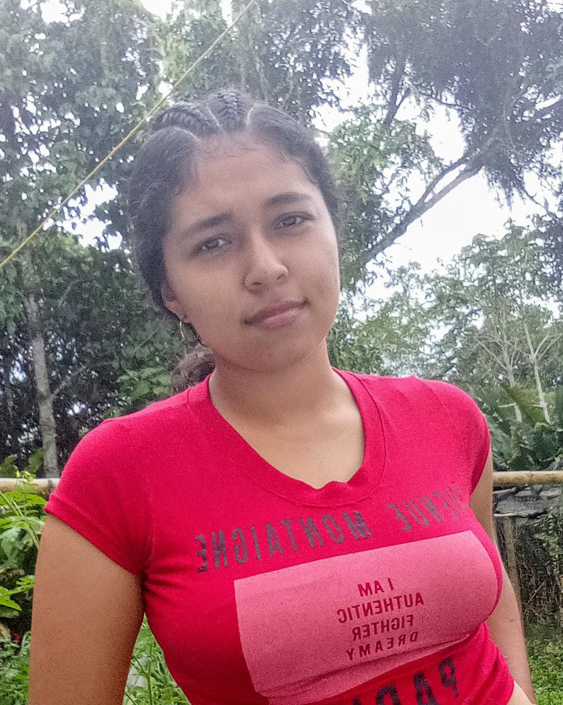

Estructura por escenarios
Tendrás a disposición las 4 secciones del curso.
Recurso digital del curso Infancias: Historias y Perspectivas. Aquí presentamos nuestra construcción de los escenarios, iniciando por “El lugar de las infancias”.
Tendrás a disposición las 4 secciones del curso.
Comprende cómo cambian los conceptos de niñez e infancia con el paso del tiempo.
Un producto pensado para leer, consultar y socializar.
Conoce un poco del equipo y su rol.

Estudiante de Licenciatura en Educación Infantil (UNAD). Asumo el rol de evaluadora, observando el proceso y aportando recomendaciones para fortalecer el trabajo colaborativo.

Madre comunitaria en Salento y estudiante de Licenciatura en Educación Infantil (UNAD UDR La Tebaida). Soy perseverante y alegre. Como relatora, organizo y comunico para que el equipo avance con claridad.

Vivo en La Tebaida y soy estudiante UNAD. Me dedico al crochet y amigurumis, lo que potencia mi creatividad. Como veedora de autenticidad, cuido la originalidad y el cumplimiento de normas académicas.

Estudiante de Licenciatura en Educación Infantil (UNAD UDR La Tebaida). En el rol de utilera, organizo y dispongo recursos e información para facilitar el trabajo en equipo y el logro de objetivos.

Soy de Santa Rosa de Cabal, tengo 24 años y dos hijos. La carrera me ha ayudado a comprender el desarrollo infantil y a acompañar mejor a mis hijos. Como dinamizador, coordino tareas y aseguro el avance del grupo.
Encuentra la información de cada escenario.
A continuación se presenta la evolución de los conceptos de niño, niña, niñez e infancia desde la Edad Antigua, Media y Moderna.
Haz clic para ampliar. Se abrirá ajustada a la pantalla con zoom y arrastre.
Referentes: Familia, autoridad paterna, jerarquías.
Referentes: Religión, familia, comunidad.
Referentes: Escuela, enfoque educativo, derechos.
Recurso de apoyo para comprender la evolución de los conceptos en las edades Antigua, Media y Moderna.
Si no se ve el video: Haz clic aquí.
Este espacio se desarrollará en el Escenario 2: Trayectos históricos.
Este espacio se desarrollará en el Escenario 3: Transformación de las realidades.
Este espacio se desarrollará en el Escenario 4: Desafíos para la acción.
Si quieres conocer un poco más, contáctanos.
Correo de contacto: nury@gmail.com
Curso: Infancias: Historias y Perspectivas
Accesos rápidos para navegar el contenido.